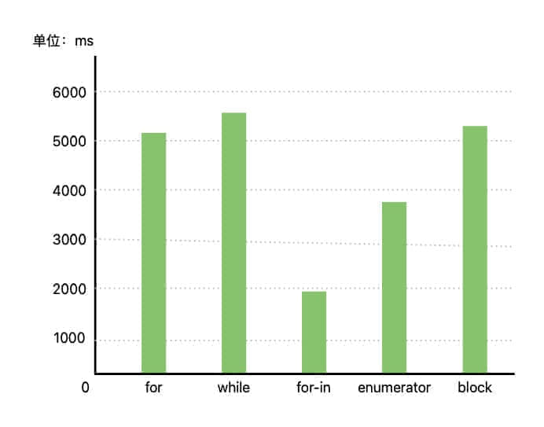

由 布多(budo) 发布于 2025-05-20
前言
在 iOS 开发中，for-in 循环以其简洁优雅的语法和高效的遍历性能，成为了开发者遍历集合对象的首选方式。然而，你是否曾好奇过：为什么 for-in 循环能够如此高效地遍历集合对象？它的底层究竟是如何实现的？本文将深入剖析 ObjC 中 for-in 遍历的底层实现原理，从 NSFastEnumeration 协议到快速枚举器的具体实现，带你揭开 for-in 遍历的神秘面纱。通过理解其底层机制，你将能够更好地运用这一重要技术，并在实际开发中做出更优的技术选择。
注：虽然 Swift 中的 for-in 语法与 ObjC 类似，但它们的底层实现原理并不相同，本文主要聚焦于 ObjC 中的实现细节。
for-in 底层实现原理
让我们通过一个简单的示例代码，来开始探索 for-in 遍历的底层实现原理：
int main(int argc, const char * argv[]) { |
为了深入理解 for-in 循环的底层实现原理，我们可以使用 xcrun -sdk iphoneos clang -arch arm64 -rewrite-objc -fobjc-arc -fobjc-runtime=ios-18.0.0 main.m 命令将 ObjC 代码转换为 C++ 代码。
struct __objcFastEnumerationState { |
通过分析转换后的代码，我们可以清晰地看到 for-in 遍历的实现原理是依靠 2 层 do-while 循环加上 countByEnumeratingWithState:objects:count: 方法来实现的。总结如下：
- 调用
countByEnumeratingWithState:objects:count:方法获取当前批次需要遍历的对象； - 遍历当前批次的所有对象，并执行 for-in 循环体内的代码；
- 重复执行步骤一和步骤二，直到没有需要遍历的对象为止。
NSArray 的 for-in 实现
虽然苹果没有开源 NSArray 的 countByEnumeratingWithState:objects:count: 方法实现，但我们可以通过分析 GNUStep 开源项目中的实现来理解其工作原理。GNUStep 是一个开源库，它将 ObjC 的 Cocoa 库重新实现了一遍，虽然它不是苹果官方源码，但还是具有一定的参考价值。
- (NSUInteger)countByEnumeratingWithState:(NSFastEnumerationState *)state |
通过分析 GNUStep 的实现，我们可以大致理解 NSArray 是如何实现快速枚举的。countByEnumeratingWithState:objects:count: 方法是 for-in 循环的核心，它的实现逻辑可以分为以下几个关键步骤：
- 批量计算：根据缓冲区大小和剩余未遍历对象数量，计算当前批次可以返回的对象数量，避免一次性加载过多数据；
- 批量获取：通过
objectAtIndex:方法批量获取数组元素，并填充到缓冲区中，减少方法调用开销； - 状态更新：更新遍历状态，记录已遍历的对象数量，确保遍历的连续性；
- 指针设置：将缓冲区的起始地址赋值给 state->itemsPtr，供 for-in 循环直接访问，提高访问效率；
- 数量返回：返回当前批次实际获取的对象数量。
这种批量获取的设计是 for-in 循环性能优异的关键。与传统的 for 循环相比，for-in 循环通过一次性返回多个元素的方式，显著减少了方法调用的次数，从而提升了遍历效率。同时，for-in 循环还实现了完善的修改检测机制，确保遍历过程的安全性：
- 集合对象在 state->mutationsPtr 中维护一个修改计数器，用于追踪集合的修改状态
- 每次对集合进行修改操作时，这个计数器的值都会自动更新
- for-in 循环在每次迭代时都会检查这个值，确保遍历过程中集合未被修改
- 一旦检测到集合在遍历过程中被修改，立即抛出异常，防止数据不一致
这种设计巧妙地平衡了性能和安全性，使得 for-in 循环既能高效地遍历集合对象，又能保证遍历过程的安全性，这也是它成为 iOS 开发中首选遍历方式的重要原因。
你可能会有这样的疑问：countByEnumeratingWithState:objects:count: 方法内部不也是通过遍历获取元素吗？为什么把外面的遍历操作挪到里面就能提高性能呢？
你可以这样去想，假设现在有 1000 个货物要从上海运到北京，如果是普通的 for 循环，它的逻辑大致是这样的：每次遍历到 1 个对象时，就安排一辆车从北京开到上海，然后把货物从上海运到北京再使用。相当于你要从北京-上海往返 1000 次，才能把所有货物运到北京。
而 for-in 循环的逻辑是这样的：当你需要遍历时，安排一辆车从北京开到上海，与之前不一样的是这次拉 16 个货物（这个 16 就是缓冲区大小）运到北京。当你需要使用第 2～16 个货物时，直接从车上拿就行，不需要再安排车从北京开到上海。通过对比可以发现，前者需要往返 1000 次，而这种方案只需要往返 1000 / 16 ≈ 63 次。这就是 for-in 循环性能优异的关键。遍历的数量越多，for-in 循环的性能优势就越明显。
下面是我在单线程下对不同遍历方式做的一个性能基准测试（测试机型：iPhone 14，系统版本：iOS 18.0）：

可以看到 for-in 循环的性能是最好的，而 while 循环的性能是最差的，两者差了 3 倍左右。
测试代码我放在这里，感兴趣的可以自己运行看看：iOS 不同遍历方式性能测试
实战应用
通过前面的分析，我们已经深入理解了 for-in 循环的底层实现机制。现在，让我们动手实现一个支持 for-in 循环的自定义类，在实践中加深对 NSFastEnumeration 协议的理解。
@interface WXLFastEnumeration : NSObject<NSFastEnumeration> |
在这个示例中，我使用了 memcpy 函数替代了 GNUStep 实现中的逐元素复制。通过这个对比，你应该能更直观地理解为什么 for-in 循环在遍历大量数据时比传统的 for 循环性能更好。
总结
通过本文的深入分析，我们可以看到 for-in 循环的实现原理主要包含以下几个方面：
NSFastEnumeration 协议：作为 for-in 循环的核心，NSFastEnumeration 协议定义了
countByEnumeratingWithState:objects:count:方法，使集合对象能够批量返回元素。这种设计避免了频繁的方法调用，为性能优化奠定了基础。批量处理机制：for-in 循环采用缓冲区（buffer）批量获取元素，而不是传统的逐个获取。这种批量处理方式显著提升了遍历效率，特别是在处理大规模数据时，性能优势更为明显。
状态管理：通过 NSFastEnumerationState 结构体，for-in 循环实现了遍历状态的精确管理。它不仅记录当前遍历位置，还通过 mutationsPtr 实现了对集合修改的实时检测，确保了遍历过程的可靠性。
安全性保障：for-in 循环在每次遍历开始时都会进行集合修改检测，一旦发现集合被修改，立即抛出异常。这种机制有效防止了遍历过程中的数据不一致问题，为开发者提供了可靠的安全保障。
双层循环设计：for-in 循环采用了两层 do-while 循环的巧妙设计。外层循环负责批量获取数据到缓冲区，内层循环则专注于处理缓冲区中的元素。这种设计既保证了遍历的连续性，又充分利用了批量处理的性能优势。
理解这些实现原理，对于 iOS 开发者来说至关重要。它不仅帮助我们更好地使用 for-in 循环，还能指导我们在实际开发中做出更明智的技术选择。例如，在处理大量数据时，我们可以充分利用 for-in 循环的批量处理优势；而在需要修改集合的场景下，我们则需要特别注意避免在遍历过程中修改集合，以防止异常发生。
总的来说，for-in 循环是 ObjC 中一个设计精妙的语法特性。它通过批量处理、状态管理和安全检测等机制，在保证使用便利性的同时，也兼顾了性能和安全性。深入理解其实现原理，能够帮助我们在 iOS 开发中更好地运用这一特性，写出更高效、更可靠的代码。